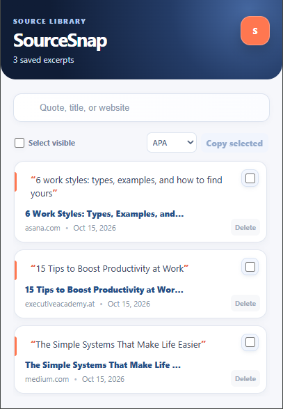

01
CHROME EXTENSION
SourceSnap
A privacy-first library that keeps copied text connected to its source, ready to revisit or cite later.
JavaScriptChrome MV3UX design
View source code ↗
BSIT STUDENT · MY DEVELOPER PORTFOLIO
Hi, I’m Rancy Guevarra, a student developer building practical interfaces for everyday study and digital work.
Open to internship and entry-level opportunitiesSELECTED WORK
Use the arrows to explore each project.
DESIGN APPROACH
I create useful digital tools that turn everyday frustrations into clear, reliable experiences. Each project begins with a real need and is shaped around the people who will use it.
I identify a real need and shape it into a clear, approachable solution.
I design interfaces that stay intuitive across desktop and mobile screens.
Every action—capturing a source, planning work, or tracking progress—supports a useful outcome.
LET’S CONNECT
Explore my projects and see how I turn everyday problems into clear digital tools.
Visit my GitHub ↗